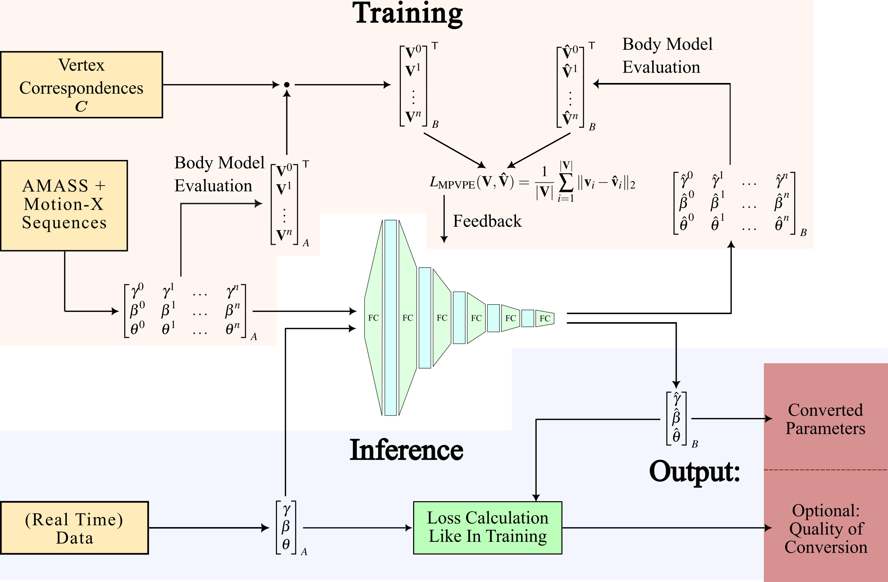
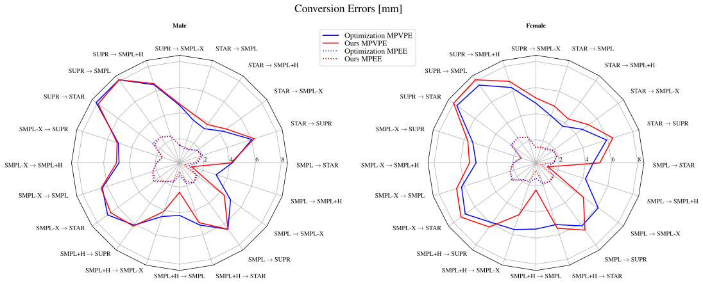
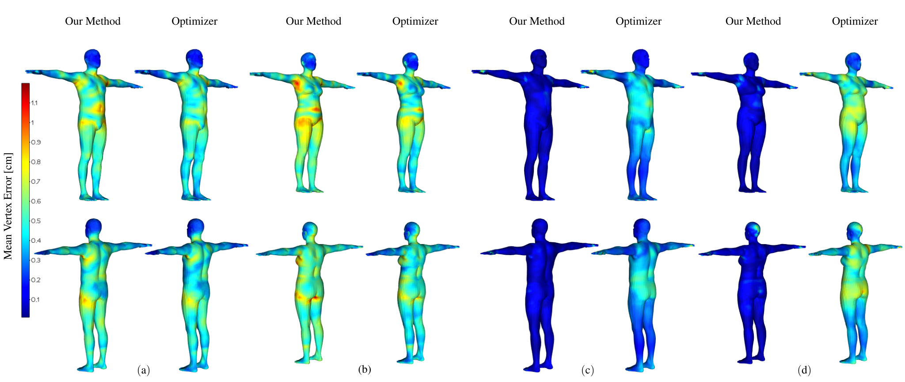
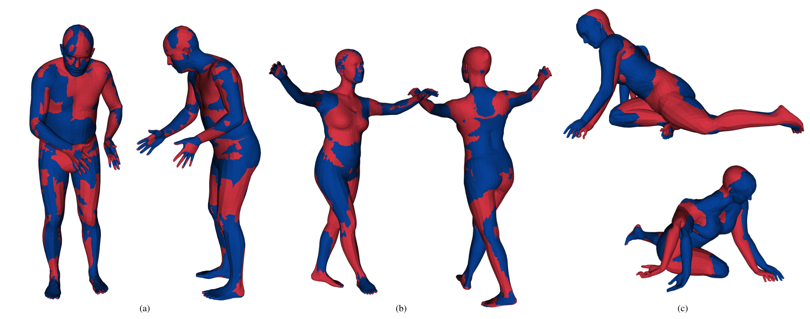
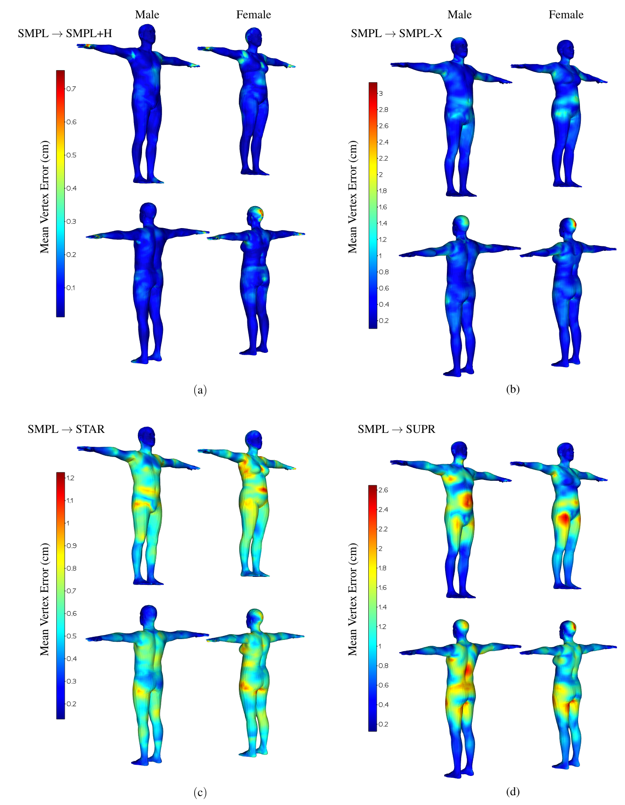
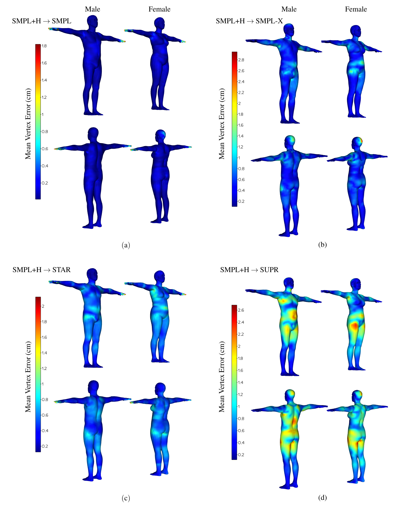
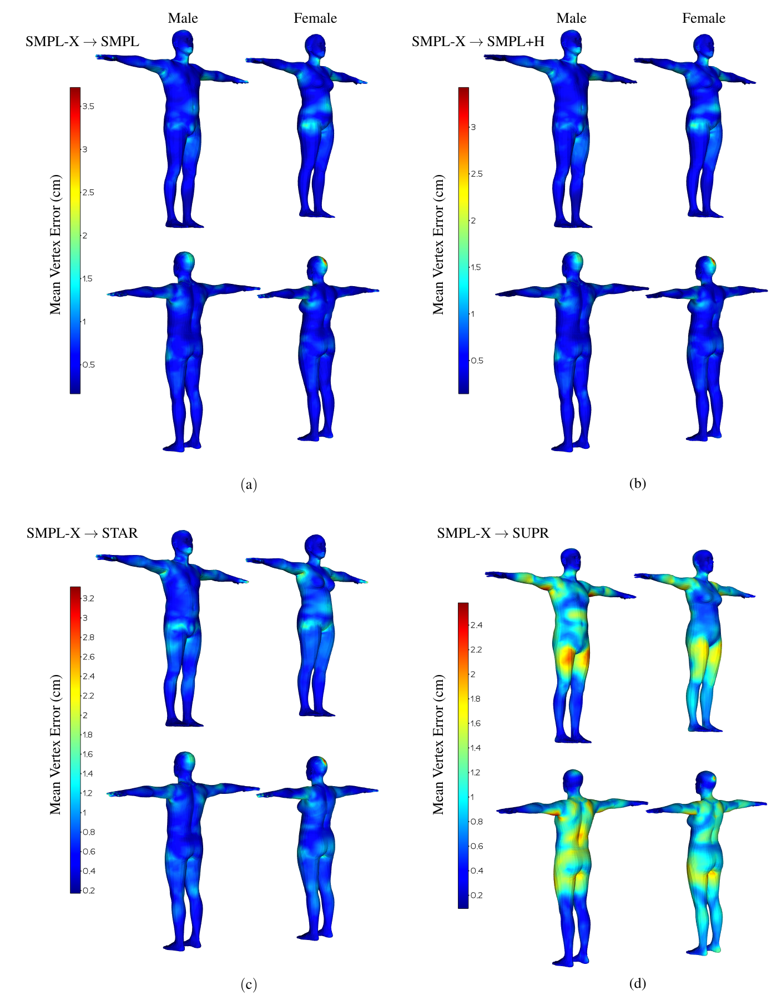
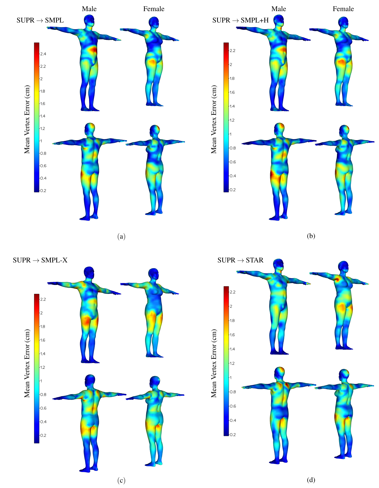
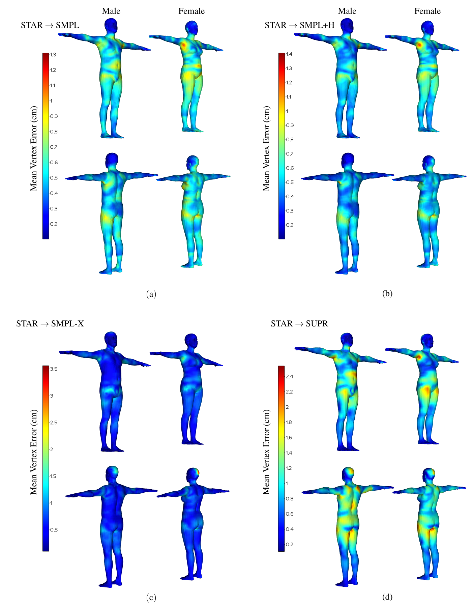
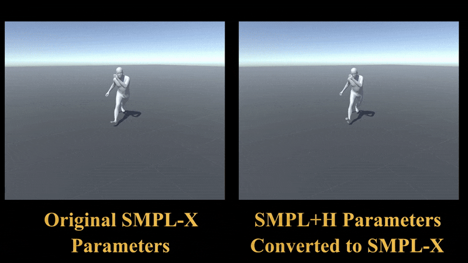

Parametric human body models, especially from the family of SMPL, are widely used in fields such as motion capture, 3D human pose and shape estimation, as well as for animation or synthesis of human motion. A problem that arises when different body model types are to be used in the same workflow is that model parameters are not interchangeable. Existing methods to convert parameters are based on optimization. While these methods achieve low conversion errors, they exhibit long runtimes, making them suboptimal for the conversion of real-time data or large datasets. In this paper, we improve on these aspects by presenting a deep learning-based conversion approach that is both accurate and fast, enabling the interplay of different body model types in real-time scenarios. To this end, we use a fully-connected neural network to jointly convert translation, shape, and pose parameters for different SMPL-based body models and show that \replaced{we}{they} can accurately convert sequences from different datasets. Our method is able to provide feedback on its conversion quality, which can be used to enhance the trustworthiness of a superordinate processing pipeline. We also implement a demo application for the real-time streaming and visualization of digital human twins. We use our conversion method to transform parameters of different body model types to a common representation before streaming and show that we can do so in real-time even for sequences that are running at 120 Hz.
Methodology
Method Overview

During training (top, light rose color), we sample human body parameters of model type \(A\) from our AMASS and Motion-X training dataset and feed it as input to our fully-connected network. The network outputs the parameters converted to body model type \(B\). We evaluate input and target body models with these parameters to obtain vertices for input and estimated parameters. For supervision, we use known vertex correspondences to obtain ground truth vertices. Finally, we are using the mean-per-vertex-position-error (MPVPE) between ground truth and estimated vertices as loss function. During inference (bottom, lavender color), we use the trained network to predict converted parameters in real-time. Optionally, we can employ the same loss calculation as during training to provide inference-time feedback on the quality of the performed conversion, enabling downstream methods to react to possibly poor predictions.
Network Architecture
Architecture of our proposed parameter conversion network. Computation layers are shown as green trapezoids, while light blue rectangles indicate the output dimensionality of the previous computation layer. Our network predicts offsets to the input parameters. Since the joint hierarchies between input and target model types might differ, a direct transfer module (yellow box) adapts the input pose parameters to be compatible with the target joint hierarchy. Elements in the gray area are present only if the target model type is either SMPL or STAR.
Results
Quantitative Results

Differences in conversion errors (MPVPE as solid line, MPEE dotted, given in mm) between the existing optimization-based approaches (blue) and our proposed conversion method (red) on 10000 samples from our test dataset.

Comparison of the conversion error of our method and the corresponding optimization-based method over 10000 samples from our test dataset. In (a) and (b), we show STAR to SMPL conversion, where our method performs the worst when compared to the optimization-based method, with differences in MPVPE of 0.4 mm for male (a) and 0.8 mm for female (b) model types. In (c) and (d), we show results for SMPL to SMPL+H conversion, where our method achieves the biggest improvements over the optimization-based method: 2.0 mm for male (c) and 3.0 mm for female (d). We show results of our method for all conversion directions in our supplementary.
Qualitative Results

Good (0.2 mm MPVPE, (a)), median (4.5 mm MPVPE, (b)), and bad (48.8 mm MPVPE, (c)) results of our conversion method, each shown from two different sides. Results show (left to right) male SMPL to SMPL+H, female SMPL to SMPL-X, and female SMPL to SUPR conversion. Shown in blue are the original meshes, shown in red are the resulting meshes after parameter conversions. Notice that for the bad result, the input mesh already contains an impossible pose for the right arm.
PVPE Gallery

PVPE for male and female conversions from SMPL to all other model types.

PVPE for male and female conversions from SMPL+H to all other model types.

PVPE for male and female conversions from SMPL-X to all other model types.

PVPE for male and female conversions from SUPR to all other model types.

PVPE for male and female gender of our conversion networks for conversions from STAR to all other model types.
Demo Video

Conclusion
We have presented a learning-based method for the conversion of parameters between SMPL-based parametric human body models. To the best of our knowledge, this is the first work that specifically aims to learn these parameter conversions. We have compared our method to existing optimization-based approaches and have shown that we can convert parameters with similar conversion quality as existing works at a fraction of their runtime. In a demo application that simulates the streaming of digital human twins, we have shown that our method can be used to convert the SMPL-based parameter encodings of these digital twins in real-time. Our method includes functionality to provide real-time feedback on its conversion quality, enabling downstream tasks to react to poor estimates, enabling a more trustworthy overall system architecture.
BibTeX
BibTeX copied!
@article{fischer_fast_2025,
author = {Fischer, Julien and Gumhold, Stefan},
title = {Fast and {Accurate} {Parameter} {Conversion} for {Parametric} {Human} {Body} {Models}},
journal = {Proc. ACM Comput. Graph. Interact. Tech.},
volume = {8},
number = {4},
month = aug,
year = {2025},
pages = {21},
url = {https://doi.org/10.1145/3747869},
doi = {10.1145/3747869},
}
Acknowledgement
The authors acknowledge the financial support by the Federal Ministry of Research, Technology and Space of Germany in the programme of “Souverän. Digital. Vernetzt.”, joint project 6G-life, project identification number: 16KISK001K, by the German Research Foundation (DFG, Deutsche Forschungsgemeinschaft) as part of Germany’s Excellence Strategy – EXC 2050/1 – Project ID 390696704 – Cluster of Excellence “Centre for Tactile Internet with Human-in-the-Loop” (CeTI) of Technische Universität Dresden, and by the Federal Ministry of Research, Technology and Space of Germany and by Sächsische Staatsministerium für Wissenschaft, Kultur und Tourismus in the programme Center of Excellence for AI-research „Center for Scalable Data Analytics and Artificial Intelligence Dresden/Leipzig", project identification number: ScaDS.AI. The authors also gratefully acknowledge the computing time made available to them on the high-performance computer at the NHR Center of TU Dresden. This center is jointly supported by the Federal Ministry of Education and Research and the state governments participating in the NHR (www.nhr-verein.de/unsere-partner).
![Shown on the left is a vector of input translation, shape, and pose parameters. In the middle is our conversion network with a wide to narrow representation that is typical for feature extraction networks. Green trapezoids represent fully connected layers that are followed by non-linear activation functions. The layers are stacked with decreasing size (each layer halves the size of the previous one). In-between every two such layers is a blue rectangle that shows the output size of the previous layer. Sizes are 2048, 1024, 512, 256 and optional 128 if the target model type is either SMPL or STAR. These optional layers are indicated by a gray area. A final fully connected layers builds the output of our network. Below the network architecture is a yellow box that represents our direct transfer module, which directly copies parameters from one body model type to another without doing any conversion but only adding additional or removing unsupported joints. On the right is again a vector representing converted translation, shape, and pose parameters. Connections between the different elements are shown with arrows. The input parameters are fed to the network and the direct transfer module. Network and direct transfer module output is added and builds the output parameters.](assets/architecture_style_1_white_background.png)